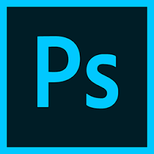

Adobe Photoshop
Adobe Photoshop je programska aplikacija za urejanje slik in retuširanje fotografij. Photoshop ponuja uporabnikom možnost ustvarjanja, izboljšanja ali drugačnega urejanja slik, umetniških del in ilustracij. Spreminjanje ozadij, simuliranje resničnega slikarstva ali ustvarjanje alternativnega pogleda na vesolje, je mogoče z Adobe Photoshopom. To je najbolj razširjeno programsko orodje za urejanje fotografij, manipulacijo s sliko in retuširanje za številne oblike zapisa slik in video datotek. Orodja v Photoshopu omogočajo urejanje posamičnih slik in velikih serij fotografij. Obstaja več različic Photoshopa, vključno z Photoshop CC, CS, XD, Photoshop Elements, in Photoshop Lightroom. Adobe Photoshop je na voljo kot naročnina, ki vključuje Photoshop Lightroom, in kot del večje naročnine Creative Cloud. Photoshop je združljiv na Intelovih računalnikih Windows in Mac.
Photoshop CC
Photoshop CC je različica Creative Cloud opreme, ki je na voljo na podlagi naročnine. Šteje se, da je profesionalna različica družine izdelkov Photoshop. Photoshop CC je napredna slikovna programska oprema, ki jo uporabljajo oblikovalci, spletni strokovnjaki, video uredniki in fotografi za spreminjanje ali manipuliranje digitalnih slik. Photoshop se uporablja predvsem za urejanje 2D slik, čeprav ponuja nekaj funkcij za urejanje 3D slike. Photoshop vključuje funkcionalnost analize slike in se lahko uporablja za pripravo slik za uporabo na spletu ali v tiskanju.
Photoshop Lightroom
Photoshop Lightroom je del družine izdelkov Photoshop, ki ga uporabljajo predvsem fotografi za serijsko obdelavo velikih količin slik. Lightroom ima možnost ustvariti in shraniti pred nastavitve slik. Ima tudi neporušitvena orodja za preslikovanje tako da izvirne datoteke ostanejo nedotaknjene. Lightroom ima možnost urejanja RAW datotek v njem lahko urejate ravnovesje svetlobe, kontrasta, nasičenosti fotografij in še veliko več.
Photoshop Elements
Adobe Photoshop Elements je različica družine izdelkov Photoshop na ravni potrošnikov. Elementi Photoshop Elements vsebujejo številne profesionalne zmogljivosti, ki jih najdete v programu Adobe Photoshop CC, vendar so jim na voljo bolj preproste možnosti, ki jih ima uporabnik na začetku ravni. Natančneje, je zasnovan za amaterske fotografe in ljubitelje digitalne fotografije. Photoshop Elements je zgrajen z uporabo iste osnovne tehnologije digitalnega slikanja kot Photoshop CC. Pogosto uporabljene funkcije vključujejo:
- Manipulira barvo slike.
- Obrezovanje slik.
- Popravljanje napak, kot so prah na objektivu ali rdeče oči.
- Risanje slike s svinčnikom ali svinčnikom.
- Dodajanje besedila slikam.
- Odstranjevanje oseb ali predmetov znotraj slike.
- Organiziranje fotografij za hiter dostop.
- Objavljanje slik na spletu ali pošiljanje preko e-pošte.
Photoshop CS
Uvedba blagovne znamke Creative Suite je vsaki različici Photoshopa vsebovala »CS« in številko različice po prvi različici Creative Suite. V tem času je Adobe uvedel nov licenčni program, v katerem je bil Photoshop najet v mesecu ali letu kot del naročnine . V tem času je Photoshop CS zamenjal Photoshop CC za Creative Cloud. Oznaki Creative Cloud sledi leto, v katerem je aplikacija prejela najnovejšo posodobitev.
Koliko stane Photoshop
Stroški programa Adobe Photoshop se razlikujejo za vsak Photoshop izdelek. Elementi Photoshop-a stanejo 100 evrov in jih lahko uporabljajo večno po nakupu. Ta programska oprema velja za stalno licenco. Stroški drugih izdelkov Photoshop-pa se gibljejo od 10 evrov na mesec do 60 evrov na mesec, odvisno od vrste naročnine in dolžine naročnine. Možnosti nižjih stroškov vključujejo aplikacije samo za Photoshop, medtem ko možnosti višjih stroškov vključujejo Photoshop skupaj z drugimi orodji Creative Cloud. Diskontirani načrti so na voljo tudi študentom, učiteljem in organizacijam, ki želijo kupiti licence za skupine z 10 ali več zaposlenimi.
Razlike med Photoshop Nac in Windows
Razlik v Photoshop-u na računalnikih Mac in Windows je zelo malo. Menijsko, nastavitveno in orodno vrstico in panelno ploščo najdete na isti lokaciji v Mac-u in Windows-u. Med operacijskim sistemom Adobe Photoshop na računalniku Mac ali Windows ni nobene funkcionalne razlike. Preden Adobe Photoshop lahko uporabljate v računalnikih Mac ali Windows, mora sam računalnik izpolnjevati naslednje minimalne zahteve.
Računalniške zahteve za Photoshop
Če želite uporabljati Photoshop na računalniku z operacijskim sistemom Windows in Mac, mora računalnik izpolnjevati te zahteve:
Kako se naučiti uporabljati Photoshop
Obstaja več načinov za učenje Photoshop-a. Priljubljene metode vključujejo poučevanje v razredih, v živo na spletu, učenje z videoposnetki in z Photoshop knjigami. Razredi so zasnovani tako, da učencem pomagajo pri skupinskih učnih aktivnostih in individualnih navodilih. Učenje v učilnicah ima tudi prednosti pomagati učencem pri premagovanju izzivov ali ovir z vodenimi navodili. Te možnosti učenja so še posebej v pomoč pri uporabi novih funkcij ali orodij.